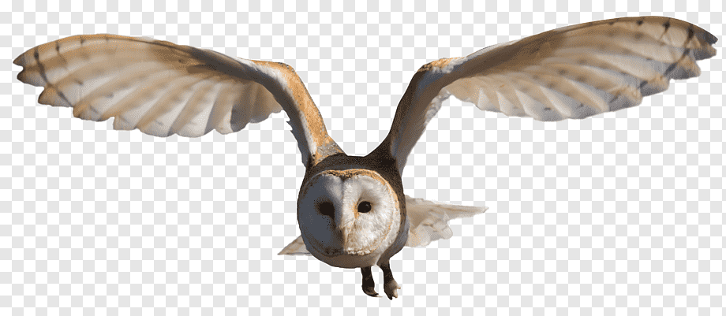

<link type="text/css" rel="stylesheet" href="styles.css" />
<main>
  <article>
    <h1>My favourite places to see in Ireland</h1>
    <section class="topDivider">
      <h2>Barn Owl</h2>
      <p>
        The barn owl is the most common owl and is found in most parts of the
        world. It has seen a huge decline in Ireland and Europe in recent years.
      </p>
      
    </section>
    <section class="topDivider">
      <h2>Curlew</h2>
      <p>The curlew is recognisable by its long curved bill.</p>
      <p>
        Curlews use their long bills to search for worms in mud or very soft
        ground.
      </p>
    </section>
  </article>
</main>
